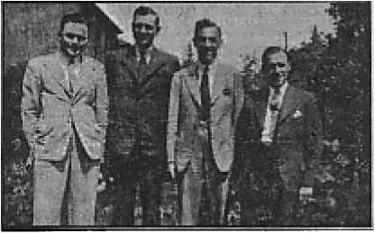

The “ Holy ” Inquisition The Devil’s own method of maintaining earth’s meanest racket
53-City Convention of Jehovah’s witnesses A record attendance anticipated, to hear “PEACE —Can It Last?”
What of the Rest Day?
France Under the Yoke
A gallant people smarting under a slavery into which they were tricked
Ono Dollar a Year Five Cents a Copy
Vol. XXIII No. 600 September 16, 1942
$1.25 In Canada and Foreign Countries
Published Every Other Wednesday
53-City Convention of Jehovah’s witnesses 7
Vassal States of Southeastern Europe
The New Government
A Defense of Jehovah’s witnesses
“Thy Word Is Truth”
What Became of the Rest- Day ?
Why Christians Were and Are Hated
Presenting “This Gospel of the Kingdom” 25
Facts About Various Bible Translations
The Supreme Court Errs (From Collier’s) 27 British Comment
Serving Jehovah God in Britain
Published every other Wednesday by WATCHTOWER BIBLE AND TRACT SOCIETY, INC.
117 Adams St., Brooklyn, N. Y., U. S. A.
Editor Clayton J. Woodworth
Business Manager Nathan H. Knorr
Five Cents a Copy
$1 a year in the United States
$1.25 to Canada and all other countries
NOTICE TO SUBSCRIBERS
Remittances: For your own safety, remit by postal or express money order. When coin or currency is lost in the ordinary mails, there is no redress. Remittances from countries other than those named below may be made to the Brooklyn office, but only by International postal money order.
Receipt of a new or renewal subscription will be acknowledged only when requested. Notice of Expiration Is sent with the journal one month before subscription expires. Please renew promptly to avoid loss of copies. Send change of address direct to us rather than to the post office. Your request should reach us at least two weeks before the date of issue with which it is to take effect. Send your old as well as the new address. Copies will not be forwarded by the post office to your new address unless extra postage Is provided by you.
Published also in Greek, Portuguese, Spanish, and Ukrainian.
OFFICES FOR OTHER COUNTRIES
England 34 Craven Terrace, London, W.2
Australia 7 Beresford Road, Strathfield, N.S.W. South Africa 623 Boston House, Cape Town
Mexico Calzada de Melchor Ocampo 71. Mexico, D.F.
Brazil Caixa Postal 1319, Rio de Janeiro
Argentina Calle Honduras 5646-48, Buenos Aires Entered as second-class matter at Brooklyn, N. Y., under the Act of March 3. 1879.
Notanda
Much Ado About Nothing
♦ In an unnamed western city a veteran of the first world war discarded a souvenir by dropping it in the garbage can. The janitor saw it and heaved it over the fence. A lady saw it and telephoned the police that “they” were dropping bombs in her yard. The troops sprang to arms, and in the outcome the whole thing was as foolish as saying masses to get a man out of a place that doesn’t exist.
$20 Apiece for Anzacs
♦ Crete was conquered long ago, but Australian and New Zealand warriors, hidden in the mountains, and every night raiding and destroying some German-Italian post and confiscating its weapons and munitions, have made so much trouble for the Axis powers that any native that betrays the location of one of them will be given $20 for his trouble. But none are ever betrayed.
United States Leaflet No. 1
♦ The British Air Force, on January 9, 1942, decorated Occupied France with 2,000,000 copies of United States Leaflet No. 1, telling the French people of the great efforts that are now being put forth by -the United States Government to assist the Allies in their war against the Axis powers. The intent is to prepare their minds for the intervention on their behalf similar to that of 1917-1918.
Holding Off the Racket
♦ The attorney general of Massachusetts, Paul A. Dever, pointed out that religious classes cannot be legally held in Massachusetts public school buildings, nor can the community expend public funds for such purposes. Further, if the opportunity is extended to one branch or kind of religionists it must be extended to all. And that is common sense on the face of it.
“And in His name shall the nations hope.”—Matthew 12:21, A.R.V.
Volume XXIII Brooklyn, N. Y., Wednesday, September 16, 1942 Number 600
The “Holy” Inquisition
THE first Inquisition was established at Toulouse in 1233. Five years later another court was opened at Aragon. The movement spread rapidly in Germany, in Holland, in Spain, in Portugal, in France; courts were established and proceeded merrily in the war, deliberate and concerted, against “heresy”.
Palatial Courts
These courts, in many cases, were magnificent structures. Often they were palaces. The Inquisition of Portugal, for instance, contained four courts, each of which was some forty feet square. The chief inquisitor had his own set of apartments, which were spacious and elegant. Around the huge courtyard were a number of magnificent salons and chambers, which the royal family, members of the court, and a number of other dignitaries occupied for the purpose of observing the executions.
What a contrast these magnificent chambers and apartments presented to the dungeons or cells which housed the prisoners. There were some three hundred of these dungeons, dark, damp and small. The only accommodation provided was a miserable apology for a bedstead, a urinal, washhand basin, two pitchers, a lamp, and a plate. The prisoners were given poor and scanty food, were forbidden to speak or make any kind of noise, and were punished severely for any breach of the regulations.
The prisoner was often kept for months in one of the dungeons before he was examined. This was probably part of a carefully thought-out scheme to wear down his powers of resistance.
On being brought before the tribunal, the accused was asked to speak the truth, and to promise to conceal the secrets of the “Holy Office”. Acceptance implied that the examination would proceed; refusal meant a return to the dungeon and probably the infliction of some form of punishment.
In the case of the examination’s being continued, a number of questions were put by the president of the tribunal and the prisoner’s answers were recorded by a clerk.
Stern Measures
He was not allowed to know either the nature of the evidence or the identity of the witnesses. Continued resistance and denial of guilt led to the inquisitors’ adopting sterner measures.
Torture was introduced for the express purpose of extracting confession, being authorized by Pope Innocent in a bull issued in 1252. The inquisitors reduced torture to something approaching a fine art, and in the process showed the possession of much psychological knowledge and insight, the procedure being nicely calculated to wear down the resistance even of the strongest-minded and most powerfully built man.
First, the accused was threatened with torture, which threat, in itself, had often the desired effect. If this failed to extort confession, he was conducted to the torture chamber and shown the instruments used. This torture chamber was well designed to afflict all, except those possessing nerves of iron, with horror, dread, and despair.
It was usually an underground apartment, devoid of windows, and lighted with nothing better than a couple of candles. The executioner was an extraordinary, awesome apparition. Clothed from head to foot in a black garment with his head and face covered, except for two eyeholes, with a black cowl, he presented a most diabolical and Satanic1 appearance.
Should the sight of the torture chamber, its impedimenta and the executioner, fail to have the desired effect, the prisoner was stripped to the buff, and his hands bound.
“The stripping,” says Limborch, “is performed without regard to humanity or honor, not only to men, but to women and virgins, the most virtuous and chaste of whom they have sometimes in the prisons.”
When the accused was all prepared for the infliction of torture, again were the questions repeated, and in the event of the prisoner’s continuing to deny his guilt, the actual torments began.
Main Tortures
The main tortures employed by the Inquisition were the pulley, the rack, and fire. There were also various modifications and extensions of these, as well as a number of lesser persecutions.
It is important to note, however, that the whole inquisitorial system, from the moment anyone was unfortunate enough to fall into its clutches, until released by banishment or death, constituted one long torment. “In many cases,” says Lea, “torture and prolonged imprisonment, in the foulest of dungeons, doubtless produced partial derangement, leading to the belief that he had committed the acts so persistently imputed to him.”
The tortures were of such a nature that few failed to confess. This applied to the innocent just as much as to the guilty. The few that remained silent and continued to protest their innocence until unconsciousness sealed their lips were carried back to their cells.
When some amount of recovery had been made, another appearance before the tribunal followed, with more threats, and, if no confession were made, further tortures. And since, as a rule, confession meant life imprisonment or death, the majority either suffered this penalty or died as a result of the tortures they had endured.
Among the cases on record where, in spite of every effort of the inquisitors, the victim’s lips remained sealed, is that of Tomas de Leon, who, at Valladolid, on November 5, 1638, was racked until his left arm was broken. More remarkable still was the case of Florencia de Leon, who underwent three forms of torture and yet remained silent; while Engracia Rodriguez, at sixty years of age, despite having one arm broken and a toe torn off, refused to confess.
On the other hand, many confessed at the very threat of torture, even though they were well aware that confession meant being sentenced to death.
At every examination there was present either an inquisitor or a commissioner of the “Holy Office”. The decision as to the nature and degree of the torture to be inflicted was left to the discretion of the tribunal. No one, other than the judges, the registrar and the executioners, was allowed in the chamber while the torture was in progress.
Soundproof
The walls of the apartment were lined with heavy quilts to prevent the screams and cries of the prisoner from being heard outside. Any confession made during the process of torture, which confession was duly recorded by the registrar, had to be ratified by the prisoner.
If he retracted this confession and refused to sign the document he could be again tortured. This repetition of torture was given in the code of Torque-mada issued to the Spanish Inquisition in 1484, and similar codes were in force in other Inquisitions.
The duration of the torture varied considerably according to the regulations in force in the different courts. Philip III issued a bull limiting it to one hour. Often the victim became unconscious long before the stipulated time. In any such case an examination was made by a physician in order to ascertain whether the condition was real or simulated. In accordance with the physician’s verdict the torture was suspended or continued.
Confession
A confession having been secured, the penalty was then decreed. Punishments in the less serious cases were whipping, imprisonment, the galleys, and banishment; those of a graver nature called for death either by burning at the stake or by strangling. The capital sentence did not necessarily mean that the prisoner would escape the ordeal in the torture chamber by confessing at the very threat of persecution. The death sentence was looked upon as an additional punishment.
The doomed prisoners, at a certain specified time, were led in procession to the place of execution. The ceremony was known as the auto da fe (act of faith). These autos da fe were not held at any regular times, or even annually, but in accordance with the discretion of the “Holy Office”. They might be held at interval^ of one year, or every two, three or four years. The ceremony, which always took place on a Sunday, was the occasion of a gathering of all the populace. The victims were to be burned to death in public or otherwise punished.
On arrival at the place of execution, where a large scaffold had been erected, prayers were offered, and a sermon preached in which the Inquisition was
SEPTEMBER 16, 1942 praised and heresy bitterly condemned. If the prisoner was prepared to accept 4and to die in the Catholic faith he had the privilege of being strangled first and then burnt. In the event of his electing to die a Protestant or a member of any other “heretic” cult, he was roasted alive.
It was only to be expected that in every country where the Inquisition existed, or, in other words, in every country where the Roman Catholic religion flourished, anyone who had the temerity to flirt with “heresy” in any form lived continuously under the shadow of a terror.
Callous Men
The inquisitors, gorged with their inhumanity, developed a degree of callousness rarely rivaled in the annals of civilization. So wide was the interpretation of the term “heresy” that the free expression of opinion in all Catholic countries, for the five hundred years of the Inquisitions’ tyranny, may be said to have been inexistent.
In a considerable number of instances charges were deliberately faked -against individuals who, in some way or other, had incurred the enmity of the inquisitors or of high and powerful authorities, ecclesiastical or otherwise, connected with the “Church”.
The vast power of the inquisitors, and particularly their authority to order prisoners to be tortured, enabled them to secure a conviction with ease against anyone against whom they had a grudge. For this reason, Catholics as well as “heretics”, were in danger.
The very fact of having a charge brought against one, and of being summoned to the Inquisition, was sufficient to strike abject terror into the bravest man or woman; for few who entered the doors of that hall of torment emerged whole in mind and body. If they escaped with their life, they were, with rare exceptions, maimed, physically or mentally, for ever.
The power and security of the Inquisition were strengthened and solidified by the grip of terror which it secured upon the people. Whatever anyone dared think, he could not, without running the risk of being incarcerated, give voice to any Criticism- or disparagement of the “Holy Office”. To the contrary, every one chanted its virtue and praised aloud its fairness.
Even those—the few there were—who were released from its clutches, either kept rigid silence respecting the treatment that had been meted out to them or otherwise glorified the institution.
Sadism
Many of the inquisitors were sadists. Many were libidinous monsters. They took such women as they wanted, on trumped-up charges of heresy, and kept them for the rest of their days as mistresses.
When the French troops captured the city of Aragon, Lieutenant General M. de Legal ordered the doors of the Inquisition to be opened, and the prisoners, numbering some four hundred, to be released. Among these were sixty beautiful young women who appeared to form a seraglio for the three principal inquisitors.
The Inquisition respected neither rank nor station. Rich or poor, peasant or nobleman, it was God help anyone who fell into its hands. One of the most illustrious of the many victims was no less a personage than Don Carlos, the eldest son of Philip the Second of Spain, and heir-apparent to the crown.
Appalled at the excesses committed, in the name of God, by the Popish hierarchs, Don Carlos, on more than one occasion, when among his friends and acquaintances, declaimed against the methods of the inquisitors. The matter came to the ears of the “Holy Office” and the prince was arrested. That the power of a king was less than that of the Spanish Inquisition Philip was well aware; and his thorough realization of this, added to the fact that he was not overfond of his son, caused him to make no real effort at interference.
Don Carlos was found guilty of “heresy” and condemned to death. Owing to his rank, one concession was granted him—the choice of the manner of his death. He decided to have a vein opened and bleed to death.—George Scott, in The Sunday Standard, Bombay, India.
Blackmailing Efficiency
♦ The Nazis have the blackmailing business down to a fine art. One of their most profitable ventures in this line was Count Armand, of Paris, 33 years of age, head of one of the 200 families that ruled France before the Germans took over, and whose vast fortune was doubled when he married one of the De Vesins. Made a prisoner of war, investigations of the Germans showed he had $10,-000,000 of holdings in Argentina. He was allowed his liberty and a little villa on the Bay of Biscay if he would fork over the $10,000,000 to the “Aryans”, which he proceeded to do.
The Courtesies of the Channel
♦ German long-range guns on the coast of France occasionally spend a few hours shooting at Dover, some 25 miles away, on Britain’s southeast coast. No doubt some of the shells hit something, but a good many things can happen to a shell on a 25-mile flight, and some of the courtesies may miss hitting anything worth while. No doubt Adolf feels that he must give his gunners something to do, but shooting at things 25 miles away doesn’t seem to be so very practical.
“The Kings Who Built Up France”
♦ The Vichy government of unoccupied France, totalitarian at heart, is getting more totalitarian in practice every day it continues. Word has now gone out that pupils must hereafter give more attention in their history lessons to “the kings who built up France”. That is just a nice way of conveying the hint that republics are a delusion and a snare and that the thing to look forward to is somebody with a prown, say Emperor Adolf, for example.
THE Theocratic Assembly of Jehovah's witnesses September 18-20, 1942, has been so arranged that it will reach out north, south, east and west to 53 assembly points in the United States. All will be tied together by land wires emanating from the key city, Cleveland, Ohio. A complete and convenient coverage of the United States was carefully figured out, and 53 cities were decided upon as the number necessary to provide convention assemblies for all parts of the country. We are glad to announce at this time that 53 contracts have been signed and the multitudinous details necessary to tie in each one of these assembly points to the complete circuit, so that they will all co-ordinate in every detail, are well under way.
In addition to the 53 cities above mentioned, this same convention program, just as it is put on at Cleveland, will also be put on for assemblies in England, Cuba, Mexico, Brazil, and other countries throughout the world. All of which clearly indicates that the 1942 assembly of Jehovah’s witnesses will be the most stupendous one of its kind to date. It is expected that it will exceed in total attendance the 115,000 at the Theocratic assembly in St. Louis last year.
This assembly is unique in many respects. First, in the fact that such an assembly is possible under existing wartime conditions. Second, in the arrangement of the assembly, which takes into consideration the many limitations that exist in transportation, gas, rubber, etc., and the limited accommodations available in practically every large city, dnd still provides for such a large gathering. The points chosen for this assembly are strategically located and accessible to all people of good-will who wish to attend, regardless of where in the United States they live.
The subject that will be considered for the public lecture, also, is unique, in that it fearlessly submits for consideration a
SEPTEMBER 16, 1942 subject that is foremost in the minds of every thinking person throughout the world at this time but on which very few dare to offer an opinion—“Peace —Can It Last?” Mr. N. H. Knorr, president of the Watchtower Bible and Tract Society, advises, when questioned regarding this subject, that his opinion on the question is of no more value than that of any other man and that he has no intention of advancing his own conclusions on the subject. He does believe, however, that the Bible, the- Word of Almighty God, does present the answer to this question and that is what he hopes to submit for the consideration of all those that are seeking the mind of the Lord on the subject. To most of us who have listened to so many theories on the solution to the present world turmoil by practically everyone who can crash a newspaper or radio station, it will be refreshing to hear what the Lord has to say about conditions in the world today and what the prospects are for future peace. This speech should provide food for thought for everyone who gives consideration to the future. Let every thinking man and woman ascertain which is the point of assembly nearest to their home, and arrange to attend this assembly. If you cannot attend the entire assembly, be sure to hear the public address, “Peace—Can It Last?” To every person whose hope is based on the Kingdom of God, this will be the answer that they have been looking for.
The key city, Cleveland, Ohio, from which the convention emanates, is ideally situated for a headquarters convention. It is a main-line terminus for all railway, bus and air transportation. It is situated on Lake Erie, with a population of 900,000, and has many beautiful parks and recreation centers. The Municipal Pier, Lake Front Park and Horticultural Gardens, on the shore of Lake Erie, adjoin the Public Auditorium, where the main assembly of this convention will be held. The city of Cleveland also provides an excellent information office in the Public Square, right in the heart of the city, where strangers visiting the city are courteously supplied with any information desired regarding Cleveland and vicinity. The Public Auditorium, where the Theocratic Assembly will be held, is on East 6th street, between St. Clair and Lakeside avenues. It is one of the largest and most complete auditoriums in the United States. Besides the main auditorium and music hall, which will seat 15”,000, there are many smaller halls with from 600 to 1500 seats. The Auditorium is located between the Public Square and (in a northeasterly direction) Lake Erie, and is within easy walking distance of either point, so that, all in all, this location provides an excellent setting for the 1942 Theocratic Assembly of Jehovah’s witnesses.
Every company of Jehovah’s witnesses throughout the country should have at least one or two representatives at the headquarters convention. Cleveland has adequate accommodations for all who will attend.
THE Chicago Tribune, August 13,1883, contained the following:
London, August 9. A paper at Constantinople announces the discovery of Noah’s ark. It appears that some Turkish commissioners appointed to investigate the question of avalanches on Mount Ararat suddenly came upon a gigantic structure of very dark wood protruding from a glacier. They made inquiries of the inhabitants. These had seen it for six years, but had been afraid to approach it because a spirit of fierce aspect had been seen looking out'of the upper window. The Turkish commissioners, however, are bold men, not deterred by such trifles, and they determined to reach it. Situated as it was among the fastness of one of the glens of Mount Ararat, it was a work of enormous difficulty, and it was only after incredible hardships that they succeeded. The ark was in a good state of preservation, although the angles—observe, not the bow or stern—had been a good deal broken in its descent. They recognized it at once. There was an Englishman among them who had presumably read his Bible, and he saw it was made of the ancient gopher wood of Scripture, which, as everyone knows, grows only on the plains of the Euphrates. Effecting an entrance into the structure, which was painted brown, they found that the admiralty requirements for the conveyance of horses had been carried out, and the interior was divided into partitions fifteen feet high. Into three of these only could they get, the others being full of ice, and how far the ark extended into the glacier they could not tell. If, however, on being uncovered it turns out to be 300 cubits long it will go hard with disbelievers.
Commenting on the foregoing The Watchtower of September, 1883, said:
The gopher wood of which the ark was built is generally supposed to be the cypress, famous among the ancients, and frequently mentioned in Scripture. It is remarkable for durability. Instances are related of doors and posts made of this wood which had lasted 1,100 years. Remembering, also, that Mt. Ararat is covered with perpetual snow and ice for more than 3,000 feet below its summit, and that an earthquake which shook it in the beginning of the present year (1883) broke loose tremendous quantities of this ice, burying under the avalanches whole villages, we cannot but think that the foregoing article is not so unreasonable as might at first appear.
Another story of the discovery of the ark is now going the rounds of the press. A part of it is given for what it is worth. It is allegedly a statement made by- an ex-aviator, Vladimir Jloskovitsky, on behalf of himself and three aviator companions, of an experience in midsummer of 1917. These Russian aviators claimed to have been stationed, on a hot, dry day in August, 25 miles northwest of Mount Ararat. They had just received orders for altitude tests and were glad to get out of the heat. (The story is taken from the Lake Headlight of Eagle Lake, Texas, issue of November 28,1941.)
“We circled the field several times until we hit the fourteen-thousand-foot mark and then stopped climbing for a few minutes to get used to the altitude.
. “I looked over to the right at that beautiful snow-capped peak, now just a little above us, and, for some reason I can’t explain, turned and headed the plane straight toward it.
“As I looked down at the great stone battlements surrounding the lower part of this mountain I remembered having heard that it had never been climbed since the year seven hundred before Christ, when some pilgrims were supposed to have gone up here to scrape tar off an old shipwreck to make good-luck emblems to wear around their necks to prevent their crops being destroyed by excessive rainfall. The legend said they had left in haste after a bolt of lightning struck near them and had never returned. Silly ancients. Who ever heard of looking for a shipwreck on a mountain top?
“A couple of circles around the snow-capped dome and then a long, swift glide down the south side and then we suddenly came upon a perfect little gem of a lake; blue as an emerald, but still frozen over on the shady side. We circled around and returned for another look at it. Suddenly my companion whirled around and yelled something, and excitedly pointed down at the overflow end of the lake. I looked and nearly fainted!
“A submarine! No, it wasn’t, for it had stubby masts, but the top was rounded over with only a flat catwalk about five feet across down the length of it. What a strange craft, built as though the designer had expected the waves to roll over the top most of the time, and had engineered it to wallow in the sea like a log, with those stubby masts carrying only enough sail to keep it facing the waves.
We flew down as close as safety permitted and took several circles around it. We were surprised, when we got close to it, at the immense size of the thing; for it was as long as a city block and would compare very favorably in size to the modern battleships of today. It was grounded on the shore of the lake with about one-fourth of the rear end still running out into the water, and its extreme rear was three-fourths under water. It had been partly dismantled on one side near the front, and on the other side there was a great door nearly twenty feet square, but with the door gone. This seemed quite out of proportion, as even today ships seldom have doors even half that large.
“After seeing all we could from the air, we broke all speed records back down to the airport.
“When we related our find, the laughter was loud and long. Some accused us of getting drunk on too much oxygen, and there were many other remarks too numerous to relate.
“The captain, however, was serious. He asked several questions and ended by saying, ‘Take me up there; I want a look at it.’
“We made the trip without incident and returned to the airport.
“ ‘What do you make of it ?’ I asked, as we climbed out of the plane.
“‘Astounding,’ he replied. ‘Do you know what ship that is?’
“ ‘Of course not, sir.’
“ ‘Ever hear of Noah’s Ark.’
“ ‘Yes, sir. But I don’t understand what the legend of Noah’s Ark has to do with us finding this strange thing fourteen thousand feet up on a mountain top.’
“ ‘This strange craft,’ explained the captain, ‘is Noah’s Ark. It has been sitting up there for nearly five thousand years. Being frozen up for nine or ten months of the year it couldn’t rot, and has been in cold storage, as it were, all this time. You have made the most amazing discovery of the age.’
“When the captain sent his report to the Russian government, it aroused considerable interest, and the czar sent two special companies of soldiers to climb the mountain. One group of one hundred men attacked the mountain from the other side.
“Two weeks of hard work were required to chop out a trail along the cliffs of the lower part of the mountain, and it was nearly a month before the ark was reached.
“Complete measurements were taken and plans drawn of it, as well as many photographs, all of which were sent to the czar of Russia.
“The ark was found to contain hundreds of small rooms and some rooms very large with high ceilings. The large rooms usually had a fence of great timbers across them, some of which were two feet thick, as though designed to hold beasts ten times as large as elephants. Other rooms were lined with tiers of cages somewhat like one sees today at a poultry show, only instead of chicken wire they had_ rows of tiny wrought iron bars along the fronts.
“Everything was heavily painted with a wax-like paint resembling shellac, and the workmanship of the craft showed all the signs of a high type of civilization.
“The wood used throughout was oleander, which belongs to the cypress family, and never rots, which, of course, coupled with the fact of it being frozen most of the time, accounted for its perfect preservation.
“The expedition found, on the peak of the mountain above the ship, the burned remains of the timbers which were missing out of the one side of the ship. It seems that these timbers had been hauled up to the top of the peak and used to build a tiny one-room shrine, inside of which was a rough stone hearth like the altars the Hebrews use for sacrifice, and it had either caught fire from the altar or been struck by lightning, as the timbers were considerably burned and charred over and the roof was completely burned off.
“A few days after this expedition sent its report to the czar, the government was overthrown and Godless Bolshevism took over, so that the records were never made public and probably were destroyed in the zeal of the Bolsheviks to discredit all belief in the truth of the Bible.
“We White Russians of the air fleet escaped through Armenia, and four of us came to America.”
Doubts are cast on the credibility of this last story by the references to masts, which the Scriptures do not mention, and which would hardly remain masts for over 4,000 years; also the mention of accommodations for creatures larger than elephants. It seems very evident that the last of the mastodons perished in the flood, because the bodies of some of them have been found in Siberia, where they were buried in the snow and thawed out only recently. No living mastodons are now found anywhere. So the Creator manifestly considered these huge creatures had served their purpose. They had a good time, in their day; so there is no occasion to bewail their fate.
Vassal States of Southeastern Europe
Few Shoes in Hungary
♦ You live in Hungary and you want a new pair of shoes. You first invite the janitor (concierge or superintendent) of your apartment house into your apartment to look at your wardrobe. He must testify to the police that you need the shoes. The police then investigate the shoe store, after you have gone for your shoes and the proprietor of the store notifies the police that you have done so. Vouchers go through numerous departments and you finally get your shoes at several times the price you formerly paid—unless some other person gets the shoes first.
Shooting German Hostages
♦ It isn’t only the forces of “the king of the north” (the Pacelli-Hitler crowd) that can take drastic action. Word comes from Yugoslavia that the Nazi commander in Belgrade has been advised by the Serbian irregulars that they hold 650 German hostages and if any more Serbian hostages are executed then away go the Germans to their doom. This will mean nothing to the Inquisition crowd. Never at any time, in bygone centuries, did they hesitate to murder their own folks, or see them murdered, if they believed the least political advantage was to be gained thereby.
Martial law has spread from Norway to Bohemia, Moravia, Croatia, Serbia, and northern France, and suicides are so common that no attention is paid to them. Troops are out looking for dissidents. Berlin announces that reprisal executions are 1,000 in number. The spirit of the Inquisition is to break down the spirit of worship, of free speech, and even of thought, and to overawe by brute force.
Otto Does Not Like the Nazis
♦ Otto Hapsburg, a king without any subjects, is traveling at present in the United States and Canada, hoping against hope that he may yet be ruler of Austria as his ancestors were before him. Before they got to be emperors they were tax collectors, which is good training for an Austrian emperor. Otto says that when he gets to be emperor there will not be left one German Nazi in Austria; also that there are 123,000 Austrians in concentration camps whose only thought is to get out and kill Hitler; and, in addition, there are places in Austria even now where no German in uniform dares to travel alone. They go in threes. If they go into the mountains singly they never return. Otto is sore at not having any job. An American female with more money than brains keeps him in bread tickets.
In the 1,628 Executions
♦ In the 1,628 executions or murders admitted by the Nazis over a period of four months, 3 were executed in Czechoslovakia for listening to foreign radio broadcasts. One of these was a policeman. The number imprisoned is not ascertainable, but it is reported from Sweden that at least 2,000 Norwegians are in three concentration camps.
Fat Passengers Must Pay Extra
♦ All passengers on long-distance motor buses in Greece are now weighed before the trip, and if above a certain weight they must pay extra fare on the excess fat.
SEPTEMBER 16, 1942
Fifty Deaths for One
♦ Reports from the ruined city of Belgrade, Serbia, are that fifty Serbs were put to death to atone for the assassination of one of Hitler’s soldiers. There is no semblance of justice in this. The basic law of Israel was “a man’s life for a man’s life”, not fifty lives for one man’s life. The men destroyed were all alleged to be Communists, but they had every whit as much right to live as Hitler or any of his men. Armageddon will be filled with terrible reprisals for those who have lightly or mercilessly taken the lives of their fellow men.
Butcheries in Yugoslavia
♦ It is calculated that, for resisting the Nazi invasion, and resisting even after the country had been nominally subdued, over a third of a million Serbs and Croats were put to death by the butchers in charge of Yugoslavia. In one city, Banja Luka, not a Serb was left alive out of a population of 12,000. In one instance a small child was shot because, allegedly, Communist pamphlets were found in the child’s pockets. Also, a young girl was shot because she was discovered in the act of trying to make a hand grenade.
Too Many War Casualties
♦ Because the men were seized for war purposes, women have been serving as postmen in Vienna, but recently went on strike because they had to deliver too many letters from the War Office announcing casualties, and were made too nervous to work by the painful scenes they were compelled to witness as the letters were received.
Mass Christening of Jews
♦ There have been mass christenings of Jews at Hlohovec, Trnava, and Nitra, in Slovakia. This was a prominent feature of The (Un)holy Inquisition in Spain; it marks the Hierarchy’s purpose to destroy the Jews everywhere, as soon as the present conspiracy attains its ends.
A Defense of Jehovah’s witnesses
♦ Away down on the Ohio river, in the extreme southeastern part of Illinois, lies Metropolis, population 6,287. The News, there published, claims a circulation of 2,857. Fifteen miles north on a freight branch of the Illinois Central railroad lies Reeseville, population 175. No passenger trains pass this hamlet of some 35 homes. It has no post office. It has other claims to distinction. It is th* home of Harry Nave, “news editor” of the Metropolis News, author of the following, which speaks for itself:
A stray band of “Jehovah’s witnesses” [1] limped through our village [2] one day the past week distributing “third Party” literature. Still don’t just know what their platform is [3]. Hard to tell if they prefer gold standard or free silver. Seems to be just three things they are skittish of, the United States Flag [4], a communion bench [5] and an army barracks [6], those three strong, grim, determined ramparts of protection against paganism, brutality and savagery, now being held by the men in uniform and the true workers at home, behind which wall in comparative safety the “Jehovah witnesses” cringe and scurry about [7] ranting of their loose lipped, loose hipped mongrel doctrine [8]. If they were as persistent and agile with a machine gun, a hand grenade, or a rifle [9] as they are with a phonograph; if they would display the dogged tenacity charging a fortification [10] as they do storming your front door—where it requires seven men, three women and two kids to subdue one [11] undersized witness [12]—if they would utilize the same amount of propaganda against the hideous, fiendish, hellish enemies [13]—which are so obvious, as they so freely hurl at the enduring established churches long preserved, glorified and divinely prospered [14] they would hurry the end of the war [15], and we would be willing to give each a sack full of phonographs and cheer them [16] as they talked their heads off.
If, at least for the present, they persist in their refusal to take the bitter with the sweet [17], they should be sports enough to stand back out of the way and allow men who are men salute the flag [18] in a clean atmosphere [19]. If the quiet, sanctified interior of a church worries them to prostration [20], or their fingers just won’t curl about a trigger, they should congregate deep in some dense wood [21], far out of the way of men and women of courage and conviction [22], entertain the creeping things of the shadows [23] with mechanical music, bark at the moon, swap literature with each other and just have a hell of a time [24],
J. C. Bremer Takes Exception
J. C. Bremer, rendering printing service to the good people of Metropolis, took 24 intelligent exceptions to the vicious statements of Mr. Nave and printed a 16-page booklet entitled “In defense of That Despised ‘Sect’ ” which is well worth reading. He took up the points, one by one, as Consolation has numbered them in Mr. Nave’s smear, above. But before proceeding to show that this abuse had not a leg to stand upon, Mr. Bremer set forth his own position as follows:
That Despised “Sect”.—‘But we desire of thee what thou thinkest; for concerning this sect, we know that everywhere it is spoken against.’—Acts 28: 22.
Prior to 1940 Jehovah’s witnesses were unknown to me. I had heard of them only a few times but had never given them a second thought. However, the violent persecution that broke out in this country against them prompted me to investigate, for the following words of Christ and St. Paul, taught me in my youth by a pastor who was a student of the Bible and had much enlightenment, kept ringing in my ears, to-wit: “If ye were of the world, the world would love his own; but because ye are not of the world, . . . therefore the world hateth you.” (John 15:19) “And
Elwood, Indiana, Kingdom Hall and magazine publishers. Taken after 2i hours of street witnessing in which 76 magazines were placed. Said the spokesman: “Eighteen months ago we had no organized streetcorner service. Now practically all the 43 publishers take part in it.”
ye shall be hated of all men for my name’s sake.” (Matt. 10: 22) ‘All that live godly shall suffer persecution.’ (2 Tim. 3:12) These people, who love to study and discuss the Bible, are being persecuted and no remonstrance is made against the profane'and vulgar language used on the streets which can easily be heard for half of a block, and sometimes much farther. Proximity of women and children is no longer considered; in fact, they have joined the chorus.
For every part and activity in the Lord’s organization there is a mimic counterpart and counter-activity in the Devil’s organization, both in the visible and invisible realm. For the Truth as revealed in the Bible, the Devil’s counterpart is propaganda (in the sense in which the word is used today) which includes smear, ridicule, misleading statements, misrepresentations, half-truths and outright falsehoods,—all calculated to mislead and intimidate.
In no instance is more violent opposition engendered than by an exposure in matters religious. There is an abundance of proof of this both in Biblical and secular history. The reason is obvious: through no other medium has the Devil been able to deceive so many people.
In the controversy between the righteous and evil forces it would be much easier, from the standpoint of temporal well-being, for a person to remain silent, but the Lord commands: “Hold not your peace,” “let not your hands be slack” and “hide not your light under a bushel”. If a person holds his peace or speaks only those things the masses wish to hear, because of the fear of man, let him be admonished by the Lord: “I, even I, am he that comforteth you; who art thou, that thou shouldest be afraid of a man that shall die, and of the son of man which shall be made as grass; and forgettest the Lord thy maker, that hath stretched forth the heavens, and laid the foundations of the earth; and hast feared continually every day because of the fury of the oppressor, as if he were ready to destroy? and where is the fury of the oppressor?” (Isa. 51:12,13) “The fear of man bringeth a snare.” (Prov. 29:25) “And fear not them which kill the body, but are not able to kill the soul; but rather fear him which is able to destroy both soul and body in hell.” (Matt. 10:28) If a man’s motive to speak only that which pleases the masses is to gain the plaudits of the crowd, let him be reminded that it is better for him to speak what he knows is right, even though he stands alone, and endure persecution, than to speak what the masses like to hear, for temporary glory, and later have his nakedness discovered. There is no surer way to sabotage our freedom than to let the fear of man make of us pusillanimous jackasses afraid to speak out boldly for the Truth, for “the Truth shall make you free”.—John 8: 32.
Bremer Did a Good Job
The author did a good job, answering each of the 24 objectionable statements, but Consolation, from which he quoted liberally, can find room to cite but a few of his statements, supported by 55 well-selected scriptures. For convenience, Mr. Bremer’s answers bear numbers corresponding to Mr. Nave’s.
(4) Jehovah’s witnesses have no aversion to the U. S. flag. They regard it as a symbol of liberty and justice, but will not idolize it. To idolize creatures or emblems is indicative of spiritual decadence. It stifles freedom of thought and conditions the mind so as to make it more amenable to regimentation of thought. The gaining of control over the minds and bodies of the people by dictators was accompanied by a frenzy of flag-waving and saluting of flag and man; and the farther the departure from the principles of democracy, the more pronounced is this tendency. Jehovah’s witnesses have been warning the people that the flag-saluting frenzy is Fascist-inspired to condition the people’s mind to their system. It will be remembered that Hitler boasted that he would invade this country in a manner that nobody would dream of. . . . The statement that they will not salute the U. S. flag is misleading. The fact is that they do not salute any flag, the cross, or any emblem.
(6) The U. S. Department of Justice has made a thorough investigation of Jehovah’s witnesses and has broadcast time and again that the witnesses are not subversive. Not only are they not subversive but they have
Theocratic publishers at Leicester, England, railway station
To those emerging from National Cemetery, Springfield, Mo., on Decoration Day, these maidens offered Where Are the Dead? and Hope. Many placements resulted. One “man” shook his fist at the youngest, and said all were dirty rats and should be shot. Thereafter a State Patrol car came and drove slowly around them three times; then reporters came and took pictures; then the sheriff came, saying he had prevented their arrest, but to beware the mob. He was told they were not running. A good witness resulted.
supplied the Justice Department with evidence of subversiveness—documentary and photographic. For this -reason they have had their cameras smashed on several occasions.
The statement that “they are against the U. S. government” is often made. Of the different forms of government by humans the witnesses unanimously prefer the democratic. But because they pray in faith “Thy kingdom come” and believe and tell the people that the Lord will establish His mountain in the top of the mountains (Isaiah 2:2) and that a stone will be cut out of the mountain which will destroy the image (beast) . and grow and fill the whole earth (Daniel 2:34) the people jump at the conclusion (and encouraged in this by those who do not want their pastures spoiled—Jeremiah 25:36) that the witnesses are advocating the overthrow of our government by force by humans. For their benefit the following is submitted:
Nations enact laws, and it is the duty of parents and children to obey all such laws as are in harmony with God’s law,
Ten-year-old Esther Johnson, Arkansas, wanted to see one of Jehovah’s witnesses; so she tried the sign above her head. It worked. The whole family are in the truth and rejoicing.
because such is right. Laws are made for transgressors, but' if one always does that which is right, according to God’s law, he will not be a transgressor of either the law of man or the law of God. . . . The law of God is supreme. All human laws that are valid derive their authority from God’s law... . . The person who is always diligent to obey God’s law, and who does obey God’s law, will never infract any law of any state that is just, proper and right.—From book Children.
Protestant Digest, May, 1940, said that members of Jehovah’s witnesses are more responsible than all others in recent years for keeping alive in American law the issue of religious freedom.
Judge Wiley B. Rutledge, of the U. S. Court of Appeals for District of Columbia, in an address at Boulder, Colo., paid tribute to the valuable work that the Jehovah’s witnesses have done for the cause of freedom.
(7) Note by the following that there is no cringing under bombardment: A witness called on an English soldier who had taken part in the battle of Dunkirk. Speaking of his experiences with Jehovah’s witnesses at Dunkirk he said:
“I will never forget the incident; they were marvelpus in the courage they displayed and the wonderful help they gave to the children. Scores were gathered there, and all in great fear of the bombers that were coming over time and again, and with each lull in the bombing these good people moved amongst the others and rendered real practical aid, especially to the children. If these books have anything to do with that, I want some. Their courage and help to others was an inspiration.”
(8) It would be difficult to find any literature that abounds more with Scripture quotations and references than that published and distributed by Jehovah’s witnesses.
(13) For facts that are more damning than any propaganda that man could devise against the enemy, Consolation, the Journal of Fact, Hope and Courage (which the witnesses have asked the people to read), should be read.
(14) The last time I was in Sunday school the lesson subject was “An Exacting Discipleship”. In the discussion the text was not once referred to, not one word of Scripture was quoted, not once was the word “disciple” or “discipleship” used, and not one requirement of discipleship given. Selfishness and ambition were the only things discussed, and it was decided that in proper doses they are beneficial.
Since twenty years ago (eighteen years before I knew anything about Jehovah’s witnesses) I have contended that the churches were taking a dangerous course by not giving more time to studying the Scriptures.
(To be continued)
British Branch servant and three London colleagues
15
TayWORD isTkuTH”
—John 17:17
DUE to the demands of total war requiring action for the total week of seven days, many clergymen of religion are complaining about the activity on Sunday, the day of churchgoing. This forces upon the attention the question of the sabbath day.
According to the only Authority on the subject, the Bible, neither Saturday nor Sunday is the Christian’s sabbath, which name “sabbath” means “rest”. The sabbath the natural Jews were commanded to keep weekly corresponded with the period from Friday at sundown to Saturday at sundown, and which was the seventh day of their God-given week. “The seventh day is the sabbath of the Lord thy God.” (Exodus 20:8-11) Such command was to the fleshly Jews only, but nowhere in the Bible is any Christian commanded to keep such weekly seventhday sabbath. Neither was there any shift from Saturday to Sunday as the Christian’s sabbath. God’s written Word in not a single text commands for Christians a “first day of the week” sabbath.
The inspired statement at Genesis 2:3, written by the prophet Moses, was not a command to keep sabbath, but a statement of fact. From the perfect Adam in Eden down till Moses there was and is no record that perfect or fallen man was commanded to refrain from physical work one day in seven. During that time faithful men of old, including Abel, Enoch, Noah, Abraham, Isaac, Jacob, Joseph, and others, kept what commands God laid upon them, yet not once is it stated that any of such kept a seventhday sabbath or were ever instructed to do so. The command to observe such a day was first given to man in the time of Moses and was restricted to Moses’ people, the natural Jews. (Deuteronomy 5) In Nehemiah 9:13,14 it is said: “Thou . . . gavest them right judgments and true laws, good statutes and commandments: and madest known unto them thy holy sabbath ... by the hand of Moses thy servant.” It therefore follows that the Israelites and their ancestors had no knowledge of or commandment concerning the weekly sabbath prior to Moses.
There is other conclusive proof that the sabbath day was something new to the Israelites, and not previously observed since man’s creation onward. The fact that it was explained to them out in the wilderness, at Exodus 16:20-30, and also the uncertainty of Moses as to what to do in the case of the first transgressor of the sabbath commandment there given (Numbers 15: 32-36), together prove that this was a new commandment, not previously known or observed among them or their fathers. In confirmation of this, Moses spoke concerning the Law Covenant of which the sabbath commandment was a part (Exodus 34: 27, 28) and then said: “The Lord made not this covenant with our fathers, but with us, even us, who are all of us here alive this day.” (Deuteronomy 5:3) This proves that Genesis 26: 5, as applying to Abraham, does not include the sabbath law.
It cannot, therefore, be claimed that the Israelites observed the sabbath day prior to the making of the Law Covenant with their nation. The fact even that the seventh day was observed by them about two weeks before the inauguration of the Law Covenant with the tables of stone at Mount Sinai does not disprove this. (Exodus 16:23-30) The Law Covenant was in force from the time of the slaying of the Passover lamb and shedding its blood in Egypt. The Passover was a notable feature of the Law, and it was first observed the night before the exodus out of Egypt began. Hence the procedure at Mount Sinai was an acknowledgment and ratification of the Covenant which Jehovah had already begun through its mediator, Moses, and with the nation of Israel. Jehovah dealt direct with Moses by means of angels, and Moses thereupon acted as the typical father and go-between toward His people. In accepting and following God’s law through Moses the Israelite nation had already entered into a covenant to obey whatever laws were transmitted through their mediator. For such reason the Law Covenant with Israel is regularly referred to as dating from the day when Jehovah “took them by the hand to lead them out of the land of Egypt”, rather than dating from Mount Sinai.—Jeremiah 31:32; Hebrews 8: 9.
The reaspn why only the chosen people, and not the unrecognized Gentiles, were given the seventh-day law and command to keep it is clearly stated. The sabbath day was to be observed as a memorial of what befell the Israelites, to wit, their deliverance from Egypt’s bondage, in which bondage they had been allowed no rest by their Gentile taskmasters. To this effect Deuteronomy 5:15 reads: ‘Remember that thou wast a servant in the land of Egypt, and that the Lord thy God brought thee out thence through a mighty hand and an outstretched arm; therefore the Lord thy God commandeth thee [not the Gentiles] to keep the sabbath day.’
Furthermore, the sabbath was given as a sign between Jehovah and the children of Israel. “It is a sign between me and the children of Israel for ever: for in six days the Lord made heaven and earth, and on the seventh day he rested, and was refreshed.” (Exodus 31:16,17) At Ezekiel 20:12, 20 this fact is confirmed : “Moreover, also, I gave them my sabbaths, to be a sign between me and them, . . . And hallow my sabbaths; and they shall be a sign between me and you, that ye may know that I am the Lord [Jehovah] your God.” Inasmuch as the sabbath law was given as a memorial or a remembrancer of Israel’s delivery from Egypt, it was not possible to give it as such prior to the time of deliverance. Also since the sabbath was given as a sign between Jehovah and Israel, its observance was fixed upon the natural Israelites only. This “sign” should not be confused with a “seal”, such as at Revelation 7: 2-8 and 9:4, as these are different words and have different meanings in the Hebrew as well as the Greek texts of the Bible.
Now to the real point of contention: Should a Christian, and especially a Jew who becomes a Christian, observe the fourth of the Ten Commandments without fail each week? The inspired Christian Scriptures answer No! Writes the converted Jew, the apostle’Paul: Tf ye are led of the spirit, ye are not under the law’ (Galatians 5:18); and,. “Ye are not under the law, but under grace” (Romans 6:14,15); and, “Ye also are become dead to the law by the body of Christ.” (Romans 7:1-4) Christians are free from the law of God’s covenant with Israel; moreover, Christians from the Gentiles were never under it. The commands of Israel’s law were not enjoined upon the Christians: “What things soever the law saith, it saith to them who are under the law.” (Romans 3:19) Jews becoming Christians are no longer under the Law Covenant, and even the Jews not becoming Christians are no longer under it, as will be later shown. The Christianized Jews by accepting Jesus Christ as their Savior and Mediator are now under a “better covenant”, the “new covenant”, of which Christ Jesus is the Mediator.—Hebrews 8: 6; 2 Corinthians 3:3-18. (To be concluded)
“Blotting out the handwriting of ordinances that was against us, which was contrary to us, and took it out of the way,.. . Let no man therefore judge you in meat, or in drink, or in respect of an holy day, or of the new moon, or of the sabbath days.”—Colossians 2:14.16.
THE Christians refused to compromise.
In whatever points pagan religions differed from one another, they were all alike in showing respect and tolerance for other beliefs. Because a man was the worshiper of one particular god was thought to be no reason why he should not also do honor to some other god. Thus it frequently happened that pagans adhered to several religions at the same time. If a person was converted to a new worship he did not necessarily give up his allegiance to the old one. The result was a great mixture of religious ideas and a lack of enthusiasm for any one faith.
But the Christians were intolerant of other religions. In the early days they did not go so far as to deny the existence of the pagan deities altogether, but they looked upon them as evil spirits whose worship was the greatest sacrilege and treason to the true God. “The gods of the heathen are devils” was a saying in which they summed up their attitude toward other religions. The driving force of their exclusive devotion made one Christian far more effective in the spread of his religion than a dozen pagan missionaries with their tolerance of rival beliefs. [Page 305]
Nero, who was an unpopular tyrant, was suspected by many of having started the fire himself. Wishing to find someone on whom to lay the blame, he picked out the Christians because they were a small, obscure group with no powerful friends. Many of them were put to death in the most cruel manner. From that time on they were subjects of a popular hatred not easy for us to understand today.
The Christians’ denunciation of other religions made them seem narrow-minded fanatics to the easy-going pagans. Their contempt for the pagan gods was held to be the cause of calamities and misfortunes, inflicted upon the people to punish such impiety. The Christians held that it was sinful to make images of the pagan gods and that, pagan sacrifices were only idolatry. Such teachings interfered with many kinds of business, such as that of artists and image-makers, and of butchers who sold the meat of animals offered to the gods.
The Christians also objected to taking part in entertainments or in public service of any kind where pagan ceremonies were practiced. As Christian meetings were held in secret, and often at night, to avoid interference, false rumors were spread abroad of immoral practices and even cannibalism in connection with their worship. ,In fact, popular hatred became so great that the Roman officials frequently felt obliged to yield to the clamor for persecution of the Christians.
As for the government, it had its own reasons for persecution. The Christians were an organized body who obeyed the law of the state as long as this did not come into conflict with the law of God. When it did, they refused obedience to the emperor and obeyed their consciences. Now, the Romans believed in the absolute authority of the state and in its right to pass laws on any subject it chose, even in matters of religion. So when they found that the Christians decided for themselves what laws they should obey, and even refused to worship the emperor, as the law commanded, the government felt that such conduct should be punished as treason. [Page 307]
[The above quotations are from World History in the Making.'}
Thanks for the Questions
♦ I thank you with all my heart for the questions and references on the book Children. It will help me a lot in studying this wonderful book. You people have a Bible study here in S----which I intend
to attend tomorrow night.—Doris Ellison, California.
Ambassador Bullitt’s War
♦ As In Fact said in an exclusive story (September 9, 1940) after its editor had read the original manuscript of the diary of Ambassador to Berlin William E. Dodd, later confirmed with quotations from this great book (February 24, 1941):
“William C. Bullitt as much as any other man living or dead is responsible . . . for the collapse of the French Republic.
“For six years Bullitt has been America’s leading intriguer in Europe. . . . Bullitt, as American ambassador abroad, succeeded in doing these things:
“1) He helped smash the [France-Russia] pact. At one time he boasted of it.
“2) He misled the French authorities with false stories about the Soviet armed forces.
“3) He worked in Paris against the Popular Front . . . collaborated with the 200 Families which turned out to be the French Fifth Column.”
In Fact stated that when Bullitt became ambassador to France after his service in Moscow, he informed Petain, Weygand, Daladier, Laval and others that the Russian army was no good, that it was useless to make a pact because the Russians would not keep it, that parachute troops were a joke, that it was a good idea to place a large army in Syria to use for an invasion of Russia.
“Ambassador Dodd’s Diary” was the source of much of this information. Dodd was aware that while Bullitt was still ambassador to Moscow he was intriguing in Berlin with Francois-Poncet, French ambassador to Berlin, to prevent the [France-Russia] pact and later to form a [France-Germany] pact to fight Russia. Dodd protested Bullitt’s “lending encouragement to these schemes” of financing the two Fascist nations, Italy and Germany.
Bullitt’s advice was accepted by
Daladier, Reynaud, Petain, and the 200 Families who ruled France. On Bullitt’s advice the [France-Russia] pact was scrapped. Now everyone admits that there might not have been a war and certainly no immediate victory for Germany if the Bullitt advice had not become the French national policy.— In Fact, issue of July 7, 1941.
Black Phantoms on French Coast
♦ The work of seizing German sentries on the French coast still goes cheerfully on. The world’s best sailors cross the stormy English Channel in the “most impossible” weather (the more “impossible”, the better), suddenly appear out of the mists, pounce on the German sentries, and are gone. The fear of them has spread through the occupation troops, mostly elderly soldiers of World War experience. The British bombings have hurt the morale of these old men; they are on a mean job in a country that has been robbed of everything that makes life worth living, and it is not unlikely that some of them rather enjoy their forced trips to Britain. It must be a strange sensation to be on sentry duty in France at night and wake up to find oneself in prison in Britain.
The Price for Sabotage
♦ When, as has happened, some Frenchman who is not enthusiastic over the seizure of his country, drops emery dust into a machine, the German custom is to shoot a stated number of persons in the plant, /or, if those in the plant are needed, the victims are taken from the nearest village. The Germans intend to see to it that all Europe keeps busy manufacturing its war equipment, and the price of sabotage is death.
Indeed, the greatest problem of the war is that the whole of Europe is now engaged in manufacturing munitions to keep itself inslavery to the “New Order”.
Murdering French Hostages
♦ The murder of French hostages goes cheerfully on. The attempt, of course, is to compel fear and subjection, but there can be no excuse for taking the lives of ten innocent men for the life of one dead Nazi officer. Of the ten butchered, five were Jews. All ten were “Communists”. There is not the least danger that in these murders Hitler will take the lives of any of his fellow religionists. It says of the ten who were slain that “they were picked by the Germans from their dossiers”. Probably Darlan or Petain checked over the dossier before the executions. Or maybe they made up the dossiers in the first place. They know which of their fellow Frenchmen to mark for death.
Nominally there is some difference between occupied and unoccupied France, but in reality there is very little, for both are in complete subjection to Germany. The slaughter of hostages continues, and announcement is made that it will be a permanent feature, the number of hostages slain corresponding to the gravity of the offense for which vengeance is being exacted. Twenty innocent persons were shot in two days, on this basis. Vichy now has a new court for dealing with those who resort to acts of violence to rid themselves of their tormentors. Sentences are to be without appeal and may refer to acts committed ten years previous. It is the Inquisition all over again, with added features.
The Shootings at Nantes
♦ The German commander at Nantes, France, was a typical Prussian bully by the name of Lieutenant Colonel Paul Frederich Hotz. A cow hooked down a low-hanging telegraph wire and Hotz fined the city $68,000. After numerous acts of this kind somebody shot and killed him. But it brought much suffering on the innocent. Fifty hostages were at once seized and shot. Among them were fourteen boys that had tried to escape from France and join the armies of the Free French. Fifty more hostages were selected to be shot, and a reward of 15,000,000 francs in blood money was offered for information as to the ones that finished off Hotz. All French yins, including even hunting weapons, and parts of guns or weapons that are not in working order, must now be turned over to the occupying forces. Real men would be ashamed to snatch innocent men off the street and murder them for crimes of which they had no knowledge whatever, but the demons are loose in Europe and no man’s life is worth anything at all.
Hard Going in France
♦ It is hard going in France. Horseflesh is included in the ration of butcher’s meat. Coffee, made of acorns, malt, and various husks and tasting like paregoric, is limited to one-half pound per month; linings for clothing may be made only of artificial composition. The farmers used to separate their own cream; now they must bring the whole milk to central depots, where the Germans skim it so thin it looks blue. Fats and grease are almost unobtainable in Paris, and it is said housewives have had to use face creams in their cooking. The markets are open to Germans until 2 p. m. Then the French wait in line for what is left. Transportation is so overtaxed that hearses make the rounds, gathering up several bodies at once.
Petain Bund Formed in America
♦ The Legion Petain formed in America would better be called the Petain Bund, as the plans and specifications are of German origin. The scheme is to dragoon every Frenchman into the organization, or put the heat on his relatives in France. It would be hard to think of anything more vicious. War veterans who have refused to join have been threatened with loss of their pensions. Petain recently applied a coat of whitewash to the king of Belgium; which he could readily do, as both are working for the same boss.
Servility of the French
♦ There is increasing comment on the servility of the French to the Germans. The French are receiving every possible inducement to come into the “new order”. One of the outstanding trends is in respect to the treatment of the Jews. Unoccupied France is going tamely and shamelessly along the same path of Jewish persecution as in Germany itself. Thus, Jewish-owned shops are being placarded. This is not civilization, but mere gangsterism. Vichy now has sixteen laws against the Jews.
In Paris the French police are aiding the German police in grafting. Fines extracted from the citizens for trifling misdemeanors are turned directly into the hands of the grafters. The surest way to avoid punishment is to speak German.
French who fled before the army of invasion lost everything. Army trucks came up to their homes and stripped them of everything that could be moved or detached, including the plumbing fixtures.
Food Scarce in France
♦ One of the newspaper correspondents, commenting on the scarcity of food in France, pictures a luncheon which cost the equivalent of a dollar at a leading Vichy restaurant. It comprised three slices of beetroot, a minute and very thin slice of tough beef, four ounces of cabbage, a small baked apple, and a glass of wine. He said of the eater of the lunch, “He scarcely feels like facing an icy breeze; nor does a growing child.”
France Faces Bankruptcy
♦ Under the burden put upon her by Germany, France is staggering toward her financial ruin. Every year she is supposed to pay for the German army of occupation the sum of $3,308,000,000. In a year’s time the currency circulation had risen by more than $3,000,000,000 and the path to bankruptcy has been cleaned and oiled.
Vichy Collaboration
♦ Vichy collaborating with Germany gets more and more like Germany itself. From the new Tribunal of State (Inquisition) there will be no appeal, and the court (Petain and Darlan) will hand out sentences of death, life at hard labor, deportation, hard labor for a specified time, or internment, as they see fit. Advices from Vichy are that in Paris several Jewish merchants have been interned in concentration camps for “persisting in remaining in contact with the public”. How any merchant could be expected to refrain from contact with the public only a Petain or a Darlan or a Hitler could understand.
Authorizations to Sail
♦ Not a French vessel can go out on the broad waters of the Atlantic without obtaining a German authorization to sail. A fishing boat obtaining such authorization must post a bond of 20,000 francs that it will return to its home port within four months. If it fails to return, the clearance papers show, reprisals may be expected against the members of the families of the fishermen. It is estimated that 65 percent of the fish caught go straight to Paris, and, as the Parisians find fish very scarce, it is conjectured that the real destination of most of the fish is Germany; and there is evidence that .such is the fact.
Shifts of German Troops
♦ It is difficult, in these days, for military powers to altogether conceal the movements of their troops. The cable, the telegraph, the telephone, and the radio outwit the censors, and the tongues of men and women are beyond their reach, also. Thus, women in public places in Switzerland disclosed to sharp ears that many men quartered in France and other countries were shifted to the East in the bitter weather of January, 1942, when the Russians and the cold north wind were pushing the Germans slowly back toward the icebound Baltic.
Petain Knew Date of Invasion
♦ The front page of New York Post, August 27, 1942, was given over almost entirely to the following sensational headlines: “Fighting French Charge: Petain Knew Hitler Date for Invasion, Kept Silent.” The story itself, appearing on page 3 of the same issue, explained that on March 30, 1940, Petain visited the Minister of Public Works in Paris and told the then minister, Anatol de Monzie, “They will need me in the second fortnight of May. They—meaning the war leaders, both civil and military— the real ones, not us who have hardly any voice in the government’*; also, “It is more than ever necessary for France to have the greatest possible leader.” De Monzie put these statements of Petain down in his diary, took note of them when Hitler invaded France on May 14, and later published the diary. This is proof enough, well known to every reader of this magazine, that “the good marshal Petain” (so designated by Pope Pius XII at the time Petain became dictator of unoccupied France) was a party to the Jesuit conspiracy to destroy France.
Malnutrition in France
♦ Scurvy, unknown in France before the war, has become general and is taking frightful toll.
In Burgundy, where octogenarians were once noted for their remarkable teeth, even children and youths are now losing their teeth because of dietary deficiencies.
The mortality rate for persons over 50 has increased 40 percent over the prewar figure.
Between the armistice and September 1,1941,180,000 infants died of malnutrition.—PM, October 20,1941.
Softening Up Northern France
♦ The work of “softening up northern France” by Royal Air Force invasions from Britain goes regularly forward, so that, according to reports published in the New York Daily News, January 13, 1942, about 100 square miles is now completely devastated and contains few signs of life. The same report states that the German guard army, made up of elderly troops, is housed twenty miles inland and is trucked and trained back and forth to the coastal trench system. The “softening up” is said to be to get the area ready for invasion.
Vichy Suspends Periodicals
♦ In obedience to orders from higher-ups in the Inquisition, the Vichy “government” (so called) has suspended additional publications for hostility to “collaboration with Germany”. Esprit and Andide are two of those thus suspended. To be thus marked by such a government and in such a cause is an honor.
Hitler’s Belgian Recruits
♦ I saw them in Brussels, marching down the Boulevard du Jardin Botannique to the Gare du Nord. They were protected on all sides by German polite. The crowd hissed and booed. I’ve never seen traitors cut a sadder figure and I’ve never heard so many Brussels invectives in so short a time. The crowd adopted the lowest local slang words to tell the traitors what it thought of them. There is nothing like a few of these phrases to take the wind out of the sails of the pro-Boches. The Degrelle and Staf de Clercq men were livid with anger and fear.—News from Belgium.
The Making of Pearls
♦ In the making of genuine pearls the larvae of the oyster are collected and planted in specially prepared grounds where they remain for three years, when they attain a diameter of about three inches, and are brought to the surface. The shells are opened and a tiny fragment of mussel shell is inserted. This serves as an irritant and starts the secretion of the mother-of-pearl. The oysters are then put in wire cages, put back in the water and left for six years. About one-fifth of the oysters thus treated give perfect pearls.
Fish Fathers
♦ Do fish make good fathers ?
A nimble-witted and observant American woman—maybe a knowing wife and mother—answers in the affirmative. The reason why is both instructive and entertaining. Fish, it appears—anyway, American fish—were among the first creatures in the world to make nests, and the latter were the result of paternal solicitude; not, as you might imagine, of mother love. Of course, many fish just drop their eggs and go about their business, letting nature take its course—they wouldn’t know their own children if they met them in the middle of the creek. But smart fish build nests and rear their children tenderly, even educate them. And it is father who does the work. Here is the true tale of an American finny father.
“Long before there were any robins and wrens and orioles, fish were building nests; and they still do. In almost any creek or pond or brackish inlet between Canada and the Gulf of Mexico you’ll find fish nests if you look for them. Sunfish, black bass, sticklebacks, and any number of others, build their nests in shallow water where they can easily be seen. The black bass, from the angler’s point of view, is the gamest fish that swums; but he is also a devoted father. When spring warms the water the black bass goes out and finds himself a wife. Posing and strutting, he leads her to the spawning grounds and chooses a nesting spot where the water is clear, clean and shallow.
“But when the last heavy, sticky egg is laid, he drives his wife away and takes charge of the nest alone. Neither rage nor fear nor even hunger can tempt him from his duty. No angleworm, grub or hellgrammite, not even a man-made lure, can entice the black bass while he is raising a family. No mischievous dace, no slithering water snake, no marauding turtle can steal his eggs—not while he lives. The black bass will fight to the death for his eggs and his helpless babies. And where is mother bass all this time? Oh, she’s off somewhere nibbling worms with the other females while father stays at home and does the work. Still he has this consolation: he knows the fin that rocks the cradle rules the deep.”
Some things are different with men.
Millions of Dead Herring
♦ Millions of dead herring strewed the banks of the Mohawk and Hudson for 200 miles up from New York, as a result of channel-dredging work near Troy. Fish are like submarines. They cannot stand the strain of explosions under water. Maybe you can remember, when you were a boy, and were swimming under water, and- some mischievous friend (certainly not yourself; mercy, no!) clapped a couple of stones under water and it sounded in your ears like the clap of doom; Ever try it?
Eels for the New York Market
♦ Eels, those curious “snakelike” fish that are born in the Saragossa Sea, but come to America or to Europe to grow up, are good food and of excellent flavor for those who can bear with the kind of food they consume, and with the fact that, owing to their peculiar nervous structure, ’they squirm in the frying pan while being cooked beheaded. New York eats 60,000 every December, all obtained in special traps at high tide at St. Johns, Quebec.
Britain Will Get the Salmon
♦ Britain has purchased all the salmon caught and canned in British Columbia during the current year; so it looks as if the only way the natives of that part of the world could get any for the table would be to catch them before the canneries can get hold of* them.
Respect for the Swordfish
♦ Those who have tried to take a swordfish apart are amazed at the marvelous way in which the Creator designed it. Can the swordfish make his presence felt ? You had better believe it. There is a well-authenticated case on record where one of them got peeved and rammed his proboscis through the copper sheathing of a vessel, then through an inch-board sheathing, then a 3-inch hardwood plank, then through a solid 12-inch white oak timber, then through another 2j-inch oak ceiling plank, and, finally, the head of an oil cask, where it remained so firmly embedded that not one drop of oil escaped. All together, that is more than 18 inches of hardwood at one thrust. The fish itself weighs 600 pounds, and, when really in a hurry, travels through the water at 60 miles an hour.
The swordfish is so put together that it can make a hit like the one above described, break off its sword, and, even if killed by the shock, never break its neck or spine. His vertebrae are so skillfully put together that when covered and bound together with ligaments and muscles the vertebrae are never dislocated. It would be interesting to hear some fool of an evolutionist explain that the swordfish did not have any designer, but just developed and grew, like Topsy.
Mother Gannet Is No Prohibitionist
♦ Your true prohibitionist feels in his inmost soul that it is an error on the part of the Creator to permit fermentation. He argues that if there were no fermentation there would be no liquor; if no liquor, no crime and no poverty; and so the earth would be a paradise. But how about the female gannet, that bird with a bright yellow beak and a wingspread of six feet found off the Gaspe peninsula? Mother Gannet dives from a height of. fifty feet, seizes a herring, and then carries it an entire day in her huge bill so that her brood may have fermented herring in the evening. She knows fermentation isn’t wrong.
Fishing for Tunas
♦ Rich New Yorkers, who used to go to Europe every summer, and now do not know what to do with their time or their money, seem to be devoting much time and energy to tuna fishing. It seems that the tuna wants to live. How strange! A New York paper shows a tuna fish 7| feet long and says it took the fisherman 3 hours 55 minutes to bring it to gaff. One could almost feel that a fish that would fight almost four hours to keep from being harpooned had a right to live and enjoy sailing around in the big pond in which the Creator originally placed it.
To be sure, however, it is all right to eat fish. They were made for that purpose. The Lord fed 5,000 and then 4,000 with a few little fish. He cooked and ate fish and had fishermen as His apostles.
Fishing for Sharks
♦ The most businesslike shark fishery is eight miles off the Florida coast and thirty miles north of Palm Beach. There a 3,000-foot steel chain is anchored and marked by buoys and baited every 25 feet with chunks of scrap fish. In one day as many as 132 sharks have been caught on the wicked-looking hooks, and on almost any day the catch will be 50. There is a good market for the hides, the oils, the fins, and you may have eaten shark meat yourself without knowing it, as it is not sold under that name.
Record Run of Chum Salmon
♦ The fall of 1941 witnessed a record run of chum salmon, along the coasts of Oregon. For two months the run was so great that on numerous occasions hundreds of them were literally forced out of the water upon the shore, there to be eaten by bears, minks, otters, rats, and sea gulls. The chum salmon brings a low price, but one skipper pocketed $1,925 for his catch and many fishermen made as high as $80 a day while the run was on, even though they received but 3|c per pound for the fish.
Facts About Various Bible Translations
EHOVAH dictated to His amanuenses, the prophets and apostles, His Word, the Bible. These faithful men wrote as they were moved by God’s spirit, but not in all the languages in which the Bible appears at this end of the world. The Bibles generally used today are translations and revisions of translations. There is much factual information about the making of these translations, the time of their publication, the men who made them, and even, in some cases, the motives by which they wpre governed in so doing, which is not only of interest but also of value to a student and minister of Jehovah’s Word. Some of such information is here given on the following translations:
Septuagint. An English translation of this version is that published by Bagster. The date of its publication is not shown, nor is any indication given as to whether it was translated into English by one individual or by a group. It is translated from the Greek version of the “Old Testament”, called the “Septuagint” (which means “seventy”) because the Pentateuch was translated in Egypt by seventy men, about 285 B. C. The rest of the “Old Testament” was translated into Greek thereafter and the translation was complete before 130 B. 0., but the name “Septuagint” is applied to the whole version. In some places it is so literal that it is a word-for-word rendering of the Hebrew into Greek. In others, it is so free that it is more of a paraphrase, or even a commentary. Certain portions of the Hebrew text are entirely omitted. The Septuagint omitted one-sixth of the book of Job. This missing portion was translated into Greek rather freely by Theodotian- (180-192 A. D.) and is usually included in the Septuagint. The Septuagint translation of Daniel is so poor that it is usually replaced in the “Septuagint Version” by Theodotian’s revision of it according to the Hebrew. Thus it can readily be seen that the Septuagint is generally not reliable, and it will be noticed that the Society quotes it very seldom. Instead of “Jehovah”, the word “Lord” is used.
Syriac. The version quoted in the Society’s publications, especially James 1:26,27, is James Murdock’s 1846 English translation of the Syriac version of the “New Testament”. For all except John 7: 53-8:11; Luke 22:17,18; 2 Peter; 1 John 5: 7; 2 John; 3 John, and Revelation, Murdock used the Peshitta Syriac version, which is a revision made A. D. 411 of an older Syriac version. In some places the Peshitta is somewhat free, at times being even a paraphrase. The original translation of the Gospels, of which the Peshitta is a revision, was made sometime between the date of their writing in Greek and A. D. 170. The translators may have been Christian refugees from Palestine who had actually heard Jesus speak. The language spoken in Palestine in Jesus’ day was very similar to Syriac, and a great portion of the Jews who lived outside of Palestine spoke Syriac. It has never been definitely established whether James wrote his epistle originally in Greek or in Syriac. 2 Peter, 2 John, 3 John, and Jude, and possibly Revelation, are. translated from the Harclean Syriac Version, which is a very literal revision made in 616 of the Philoxenian Syriac Version made in 508. Luke 22:17,18, John 7: 53-8:11, and 1 John 5:7 first appear in Syriac in a manuscript written on Mt. Lebanon in 1626.
Young. Robert Young (who also compiled the Analytical Concordance to the Bible) translated the Bible from the Hebrew and Greek (the same Greek text used for the “Authorized Version”) and published it in 1862. He later revised and republished it. He always uses the word “Jehovah” wherever it appears in the original; and his is the most literal translation of the whole Bible. It is the only translation of the Bible in English that translates the verbs consistently; that is, if it translates a certain form of the verb one way in one place it translates it the same way in every other place. Therefore it is a very reliable translation.
Emphatic Diaglott. This translation of the “New Testament” was made by Benjamin Wilson and published about 1867. His interlinear translation of the Greek text in the left-hand column of every page is very reliable and a great aid in studying the “New Testament’'. In the right-hand column of every page appears Wilson’s own version, which is literal and generally reliable, though it is biased in favor of religion in the case of scriptures that refer to Jesus’ prehuman existence and not having a body of flesh since His resurrection, and also all scriptures referring to Satan the Devil. He uses the word “Enemy” instead of “Devil”, and “adversary” instead of “Satan” (Revelation 12:9), showing he did not believe there is a personal Devil.
English Revised Version. This is a revision of the “Authorised Version” made by almost a hundred scholars from the Hebrew and Greek and was published on May 5, 1885. As in the “Authorized Version”, “Jehovah” is used a few times in the text and margin, but in the majority of cases the word “Lord”, or “God”, is substituted. It is a literal translation, and therefore reliable. However, the English rendering of the verbs in the “New Testament” was made to conform to their meaning in classical Greek instead of the meaning they had in the common, everyday Greek in which the apostles wrote.
Rotherham. This is a very literal and reliable translation made by Joseph Bryant Rotherham from the Hebrew and Greek and published in 1897. For the name “Jehovah” he always uses the pronunciation “Yahweh”.
American Revised Version. This is a revision of the “Authorized Version” by a group of American scholars using the Hebrew and Greek, and was published in 1901. It always uses the words “Jehovah” and “Sheol” to represent these two Hebrew words. It is literal and reliable.
W eymouth. This is a so-called “translation” made by Richard Francis Weymouth of the Greek “New Testament” and first published in 1902. He revised it and published it again in 1909. It is very free, and in places is no more than a paraphrase, and therefore entirely unreliable.
Rotherham Psalms. This is Rotherham’s revision of his former translation of the Psalms according to the Hebrew. It was published in 1911, after his death. This is a careful and literal, though idiomatic translation, and is therefore very reliable. In this version the word “Jehovah” is always used.
Moffat. This is supposedly a translation of the Bible from the Hebrew and Greek, by James Moffatt, first published in 1922. He revised it and republished it in 1926. It is more a paraphrase than a translation, and therefore entirely unreliable. It is seldom quoted in the Society’s publications. “Jehovah” is nowhere used, but instead, “Eternal” or “Lord”.
There remain five Bible translations to be considered and they are, for reasons later to be explained, the ones most likely to be used by ministers of the gospel who go from house to house, meeting people of all religious faiths. They are the widely used King James or Authorized Version, the Catholic Douay, and three Jewish translations—Leeser, Margolis, and Harkavy.
Pressure in Bulgaria
♦ The blessings of the “new order” in Bulgaria are the same as elsewhere. As a reward for permitting the Nazis to use their country as a springboard from which to attack Greece and Yugoslavia, 250 liberty-lovers were shot in a period of six months and several thousand are in concentration camps.
The Supreme Court Errs
From Collier’s, The National Weekly, July 18,1942.
WE ARE fighting a global war, as the Roosevelt Administration which appointed a majority of the present Supreme Court justices keeps telling us, to bring the “four freedoms” to the whole world. One of these freedoms is freedom of expression, a term which includes freedom of the press as guaranteed by our Bill of Rights. Another is freedom of religion.
Yet five out of the Supreme Court’s nine justices saw fit recently to hand down a decision curtailing somebody’s freedom of both press and religion. True, the somebody was nobody but the small and cantankerous sect known as Jehovah’s witnesses. But this decision, which held that town governments can force this sect’s tract-pushers to pay license fees as peddlers, can be used to legalize the licensing of producers of any publication sold on streets or newsstands.
The license fees can be of any size. That means that any publication or tractspreading religious group whom the licensing power happens not to like can be driven out of business in the licensing power’s bailiwick by fees placed prohibitively high.
This decision’s threat to religious and press liberty in this country is real and urgent. These two freedoms can be wiped out if this decision stands. The decision was handed down by Associate Justices Byrnes, Frankfurter, Jackson, Reed and Roberts, with loud and vigorous dissents from Chief Justice Stone and Associate Justices Black, Douglas and Murphy.
While freedom of religion and of the press are being done to death in this country, our boys will be fighting to bring those blessings to the rest of the nations of the world. There is some discrepancy somewhere in all this.
We have a suggestion. Here it is: Let one or more of the big, powerful, well-organized and well-financed churches challenge this decision. Let one of these organizations, or a group of them if they feel so minded, turn loose some “peddlers” of religious literature in two or three towns which insist on licensing such persons; let these “peddlers” refuse to pay the license fees; let them be arrested; let the case be fought through the courts on the constitutional issue involved. And see how soon the Supreme Court finds, that it erred when it sought to water down the Bill of Rights in these particulars.
Unless press and pulpit want their liberties whittled away by virtue of this Supreme Court decision, they had better get together now to carry this fight to a reversal of the decision. If those liberties go by the board, most of the things that make life worth living in the United States will go with them.
[It is sincerely doubted that any of the big religious organizations, whether Catholic, Protestant, or Jewish, will accept Collier’s suggestion in this matter. It would require courage to do so. They probably think that they need not concern themselves about it, and that. Jehovah’s witnesses will be the only ones singled out for attention by local law-making and law-enforcing officers, as if in this case the ‘mischief framed by law’ could be confined, in its application, to an unpopular minority. However, laws do not work that way, and the time is not far distant when those who now think that they are secure will find themselves caught in a net of their own weaving. It is well known that the religious systems, notably the Roman Catholic, have been largely instrumental in stirring up lawless treatment of Jehovah’s witnesses, and it is not likely that they will interfere in the present instance.—Ed.]
Athenians Crying for Bread
♦ A Swiss girl who lived in Athens during its capture by the Nazi troops recently returned to her own land and reports that in the winter of 1941-1942 groups were rummaging garbage cans for food and crying out the German and Italian names for bread at the corners of the city streets, so that their conquerors might relent and give them food.
JOYFUL OUTLOOK ON THE FUTURE
The WATCHTOWER magazine sets forth Jehovah God’s purposes toward all people of good-will. Don’t be without this beneficial journal. Send in your subscription and be among the thousands of WATCHTOWER readers who rejoice in Jehovah’s revealed Word of guidance and hope as presented in the colums of The WATCHTOWER.
Read The WATCHTOWER and
LEARN THE WAY TO PEACE IN THE NEW WORLD.
Published twice a month
16 pages Mailed to you postpaid at $1.00 per year.
WATCHTOWER, 117 Adams St., Brooklyn, N. Y.
Please enter my name on the Watchtower subscription list for a year, for which $1.00 is enclosed herewith.
Name ..................................................... —
Street .......................................................................—................................................................
City ................ State ..................................................
British Comment
By J. Hemery (London)
[Compiled, this issue, in America.—Ed.]
Serving Jehovah God in Britain
♦ An incendiary bomb pierced the roof of Central London Kingdom Hall, Craven Terrace, and set up a blaze inside amongst the furnishings. This fire was quickly brought under control by the Bethel brethren on fire watch duty. That same night seven fire bombs fell on the Society’s premises where the Bethel home and office are located. To show how the demons made the London Bethel a target, in three months twenty-nine high-explosive bombs have fallen within a few hundred yards of the Society’s office, the nearest being across the street thirty yards away. One of the largest bombs which caused a city record for damage dropped only seventy yards to the rear of the Bethel. The office was twice threatened with raging fires consuming buildings fifteen feet in back of Bethel. The Bethel home has rocked many a time just as in an earthquake. Cracks in the walls have had to be repaired. There have been nights of horror and death which no members of the family will ever forget. In spite of all this God’s “strange work” in London and throughout Britain progressed as never before, bringing hope, consolation and comfort to thousands who are seeking true refuge.
There were obstacles confronting almost every phase of the field work during the past twelve months. There was a continual striving against the demons to keep the way open for the Theocratic witness. Just to name a few of the problems to solve: There was a limitation of imports on literature supplies and magazines; shortage of paper supplies for printing; loss of stock in air raids; fourteen Kingdom Halls destroyed; government labor service difficulties; police interference with street witnessing; transport dislocations in dispatching goods; rising costs of operation in every way; press opposition and misrepresentation by our enemies; Catholic Hierarchy continued its attacks; assaults in the field and abuse; educational authorities challenged right of children to engage in the street witness work; fire watching controversy; military tribunals; several legal actions against enemies of The Theocracy; loss of sleep and energy due to air raids; repairing damaged equipment due to air warfare; answering of hundreds of Government inquiries affecting the work and publishers throughout the land; rate exemption court cases with reference to Kingdom Halls; appeals on behalf of the brethren in the Dominions and Colonies with their respective government authorities in London; evacuation problems and assistance to brethren losing their homes; applications for licenses for every form of supply and the control of same. By the Lord’s grace, all these obstacles were overcome, resulting in the greatest witness ever given in Britain. —1942 Yearbook of Jehovah’s witnesses.
Government Lymph at Middlesex
♦ It seems that if one has never been vaccinated his blood is in Such a condition that he may be out of luck when he is. Few citizens of Leicester, England, have ever been vaccinated, but occasionally they do resort to the needle elsewhere. The Leicester Mail, December 23, 1941, reports the case of a Royal Air Force volunteer aircraftman, 19 years of age. He went to Middlesex to train to become a pilot. There he was vaccinated, along with 250 others, out of the same bottle. The rest got along all right but young Roland Horace Bellamy of Leicester died of post-vaccinal encephalitis. He couldn’t handle it. “A verdict of death by misadventure was recorded.”
British West Indies Dominion
♦ I have read with great interest the editorial of March 1 with reference to India. You might have added to the other truths you set forth that the hopeless British situation in Burma is in no small measure due to the treatment accorded U. Saw by Prime Minister Churchill. Had the Burmese been granted dominion status immediately, the story of the campaign in Burma might have been quite different. As was pointed out by Mr. Saw prior to his arrest, to refuse dominion status • to Burma on ground of that country’s not being able to defend itself was startlingly ridiculous and could only indicate bad faith.
India was promised dominion status during the war of 1914-18 as the price of loyalty. After the war was over British officialdom inaugurated instead an era of wholesale imprisonments, floggings, shootings and massacres of the Indian population, such as the one at Amritsar, where over one thousand Hindu men, women and children were shot and bayoneted by British soldiers and police in an effort to repress legitimate Indian political aspirations.
Quite near our own shores, in the British West Indies, there is a similar situation. For many years the leaders of the Negro peoples, who make up the overwhelming majority of the population, have been demanding full manhood suffrage and the federation of the islands into a self-governing dominion. British officialdom has done no more here than it has done in Bhrma and India to insure the continued loyalty of the West Indians.
Should these black people become malcontent at this time, weak as they may be in organized military and naval power, they could open the back door of' the Panama Canal to Japanese submarines and make the oil of Venezuela and the bauxite of Dutch Guiana inaccessible to the United Nations.
Black West Indian labor built the Canal and is building the Caribbean bases. Black West Indian fishermen and seamen know more about the Caribbean than anyone else. Black West Indian hunters, lumbermen, bushmen and prospectors know as much about the trackless forests and jungles of the Guianas, Venezuela, Honduras, Colombia, Ecuador and Central America as do the native Indians, with whom they have freely intermarried.
Since this area is of most vital importance to us, our government should advise the British that timely action, with respect to the tabled recommendation of Lord Moyne’s commission in favor of West Indian dominion status, is most desirable.—Lester E. H. Taylor, in the New York Times.
“Holy Father Wires Poles ...”
♦ Anticipating the time when leaders of religion will no longer be able to deceive the people, Consolation has often spoken of the clergy as being glad to exchange their jobs for more honorable, if more laborious, employment. Well - advised would these men be if they acted on the idea without further loss of time and purchased their overalls and alarm clocks now.
The headlines in a newspaper recently seemed to suggest that the pope himself had done something like the foregoing. In bold type the headline announced “Holy Father Wires Poles in' England”. One had a mental vision of “His Holiness” at the top of a pole, fixing telegraph wires, and doing some really useful work at last.
Alas, the vision was shattered by the succeeding parapgraph, which showed that “Pontifex Maximus” had merely sent a New Year telegraphic message to the Polish president in London. But had that original interpretation of the heading been a reality, what a wise lead it would have given to the rest of the Catholic Hierarchy and their religious allies. Now they hang on to their jobs till too late.—Frank R. Freer, England.
Zero Weather in a Lifeboat
♦ Sailors justly claim that no suffering on land is comparable to that at sea. A submarine sank a large steamship 160 miles off Nova Scotia. There was no warning, and 90 lives were sacrificed in 20 minutes when the ship went down. The others, 91, were gotten into a lifeboat. The weather was zero. Of these latter, 38 died of the cold as the waves washed over the gunwales and froze to their clothing. Some of the dead were pushed overboard, but other bodies were kept to provide some shelter against the cold and the water that sprayed the survivors, soaking them to the skin. Port was reached in twenty hours. Most of the rescued had frozen ears or frozen fingers, and the legs of several were frozen from toes to hips. The captain barely survived.
Seven Men Were Saved
♦ The London Evening Standard tells of a fast Canadian troopship bringing 1,000 airmen to Britain, each of whom had had a year’s experience in flying. On the way a U-boat showed up and fired a torpedo. It missed. It fired another, and that also missed. It fired a third, which would surely have hit the cruiser and sent it to the bottom. Unhesitatingly, an unnamed destroyer rushed between the torpedo and its mark. There were 100 men on the destroyer when it blew up and went to the bottom, but seven of the men that were on board were saved, and all the airmen got through to Britain all right.
Not Such a Pleasant Ride
♦ Restrain your hankering for the 7|-hour plane ride over the ocean from Lisbon to London or vice versa. The windows are blacked out, so that you can’t even see the waters below, and an enemy plane is liable to be encountered at any minute and finish the trip for you without the good offices of even an undertaker.
Ecclesiastics versus Ecclesiastes
♦ Ilfracombe is very religious. With a population of about 10,000 there are at least fifteen churches, and the place is overrun with dumb dogs. A local curate, accosting two of us one day, asked about our work, and, on being shown the scriptures (of which he was quite ignorant) for all his questions, admitted that he did not, believe the Bible, that Ecclesiastes was pagan and that the Apocrypha was an authority! He pleaded with us to leave his parishioners alone, and seemed concerned as to what we might be telling them about the clergy.—K. F., England.
Had Been Reading for Years
♦ A lady in the lodge of a big house has been reading the books for years. She is sure that God sent us to her in answer to prayer, and she is convinced that this is the truth. She is reveling in the book Salvation, and today she said she would love to join us in taking the message to others.—L. A. H., England.
De Valera’s Whine
♦ De Valera, ruler of Eire, whined that neither Britain nor the United States told him in advance that American soldiers were going to land in another country, i.e., Northern Ireland, Ulster. He should have remained silent, and thus not disclosed his latent subservience to Hitler and Hitler’s real boss, Pacelli.
Britain Has One Percent CO’s
♦ Britain has about one percent of conscientious objectors. Out of a total registry of 6,709,736 men registered prior to July 12, 1941, the total number of conscientious objectors was 61,673 men.
Getting Rid of the Armor
♦ The British are getting rid of most of their old armor, in the most natural way in the world. It is going into the national melting pot to make steel for tanks, bombs and shells.
Over fifty convention auditoriums will be tied together by direct wire with the key city, Cleveland, Ohio. The Public Auditorium, Cleveland, Ohio, has been engaged by the Watchtower Society for the key convention assembly point.
If you cannot attend one of the conventions for all three days, be sure you are there Sunday, September 20, and hear the lecture “Peace— Can It Last?” by N. H. Knorr, president of the Watchtower Society. Below, for your convenience, are listed all the convention cities and the auditoriums. You are welcome. Come. Admission free; no collections taken.
CONVENTION CITIES, HALLS AND ADDRESSES
All conventions will open at 8: 30 Friday morning, September 18. Do not fail to be at one of the convention halls when the address of welcome and keynote lecture are given, Friday evening, at 8 o’clock Eastern time. (7 p.m. C. T.; 6 p.m. M. T.; 5 p.m. P. T.)
KEY CITY
Public Auditorium Lakeside Ave. & E. Sth St. Cleveland, Ohio
ALABAMA
Cascade Plunge, 6815 2d Ave. S.
Birmingham Murphy High School 102 S. Carlin St., Mobile YMCA Colored Community Center 504 St. Anthony St., Mobile
ARIZONA El Zaribah Temple 15th Ave. & Washington St., Phoenix
ARKANSAS
Travelers Field, Adjoining Fair Park Little Rock
CALIFORNIA
Moose Hall, 1851 Fulton St., Fresno Shrine Ballroom, 3244 Royal St.
Los Angeles Scottish Rite Temple Van Ness Ave. & Sutter St. San Francisco
COLORADO
El Jebel Temple, 4625 W. 50th Ave.
Denver
FLORIDA
Municipal Auditorium, Plant Park Tampa
GEORGIA
Atlanta Woman’s Club Auditorium 1150 Peachtree St., Atlanta Waycross City Auditorium Pendleton & Oak Sts., Waycross
IDAHO
Liberty Theatre, Emmett
ILLINOIS
Ashland Boulevard Auditorium Ashland Blvd. & Van Buren St. Chicago Theocratic Convention Tent 2400 East Cook St., Springfield
IOWA
Shrine Auditorium, 10th & Pleasant Des Moines
KANSAS Trocadero Dance Havilion 3400 W. Douglas, Wichita
KENTUCKY
Swiss Park, Preston & Lynn Louisville
LOUISIANA City Park Skating Rink
1450 Perkins Road, Baton Rouge Knights of Pythias Hall (Colored)
597 S. 13th St., Baton Rouge
MAINE Witham’s Lobster Pound, Rockport
MARYLAND
Lyric Theatre Opposite Mt. Royal Station Baltimore
MICHIGAN
Moose Temple Cass & Elizabeth, Detroit
MINNESOTA Shrine Auditorium 201 E. First St., Duluth Minneapolis Auditorium Grant & Third Ave. S., Minneapolis
MISSOURI
Victory Theatre
9th & Holmes St., Kansas City
MONTANA
Masonic Temple Auditorium
821 Central Ave., Great Falls
NEBRASKA
The Welfare Society House
1430 N. 10th St., Lincoln
NEW MEXICO Silva Hall, Bernalillo
NEW YORK
Odd Fellows Temple
46-48 Beaver St., Albany Kalurah Temple
255 Washington St., Binghamton Assembly Hall, Memorial Auditorium Main St. & Lower Terrace, Buffalo Manhattan Center
34th St. at Eighth Ave., New York
NORTH CAROLINA Griffith Baseball Park 514 Magnolia Ave., Charlotte
NORTH DAKOTA City Auditorium, Bismarck
OKLAHOMA
Theocratic Convention Tent
3 mi. north of Capitol on Hy. 77, 1/4 mi. east on Grand Blvd.
Oklahoma City
OREGON
Biehn Building, 9th & Klamath Ave.
Klamath Falls
Norse Hall, 111 N. E. 11th Ave.
Portland
RHODE ISLAND Rhode Island Auditorium
1111 N. Main St., Providence
SOUTH CAROLINA Hibernian Hall, 109 Meeting St. Charleston Dart Hall (Colored)
Kracke & Bogard Sts., Charleston
SOUTH DAKOTA Deadwood City Auditorium 101 Sherman St., Deadwood Masonic Temple
120 E. Fifth Ave., Mitchell
TENNESSEE Palace Roller Rink Essary Road & N. Broadway Fountain City Silver Slipper Club on Macon Rd., 7/10 mi. E. of U. S. 70, 4 mi. N. E. of Memphis
TEXAS
Vickery Park
Highway 75, Greenville Ave., Dallas Kingdom Hall
4021 N. Piedras St., El Paso End of Main Dance Pavilion, on Old Main Street Road, near Bellaire Boulevard, I^ouston Municipal Auditorium San Antonio
UTAH
The I. O. O. F. Temple
41 Post Office PL, Salt Lake City
VIRGINIA The Mosque Main & Laurel Sts., Richmond WASHINGTON Masonic Temple Harvard & Pine Sts., Seattle Turner Hall
25 W. 3rd Ave., Spokane
WEST VIRGINIA Municipal Auditorium Virginia-and Truslow Sts., Charleston
WISCONSIN Odd Fellows Hall 308 W. Mifflin St., Madison
CUBA
Salon “Artistica Gallega” Zulueta 658 Altos, Esquina Gloria Havana
HAWAII Kingdom Hall 1228 Pensacola St., Honolulu
“PEACE — Can It Last?” Sunday, September 20
4 p.m. Eastern time; 3 p.m. Central time; 2 p.m. Mountain time; 1 p.m. Pacific time.
32
CONSOLATION
Satanic is the right word for this whole devilish business, and for the religious cult that brought it into existence. Yet to this day this sect alone, through its official spokesmen, such as Belloc, Harney, Ryan and others of its living leaders, claims the right to force all to bend to its will (Belloc), says that if it had the power it would murder all objectors to its blasphemies (Harney), and impudently inquires (Ryan) what protection Protestants can have against a Catholic State when once the politicians have surrendered all to their Catholic will.—Ed.